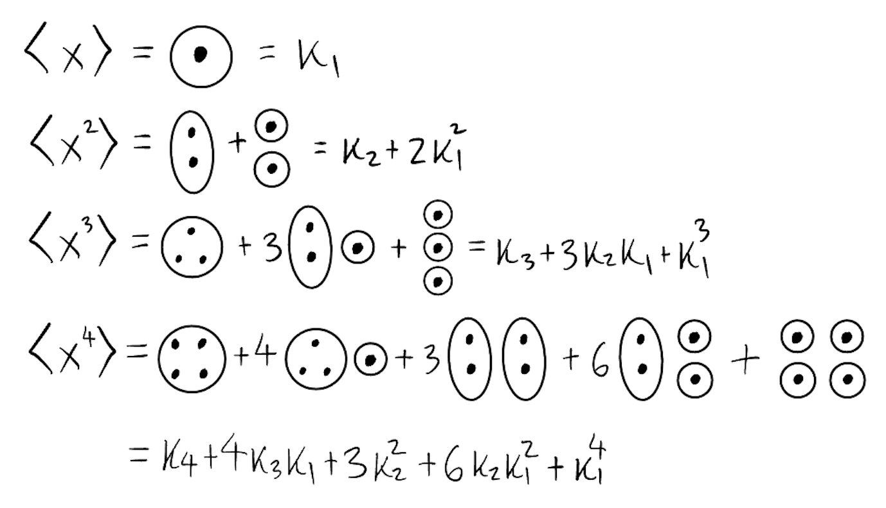
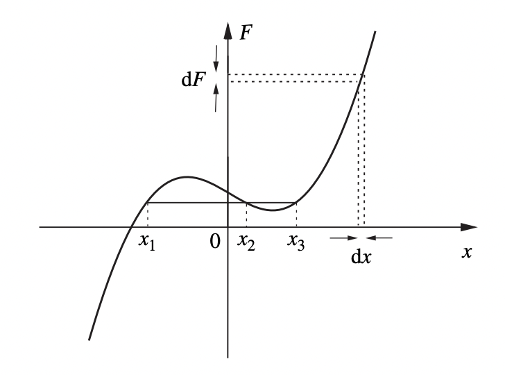
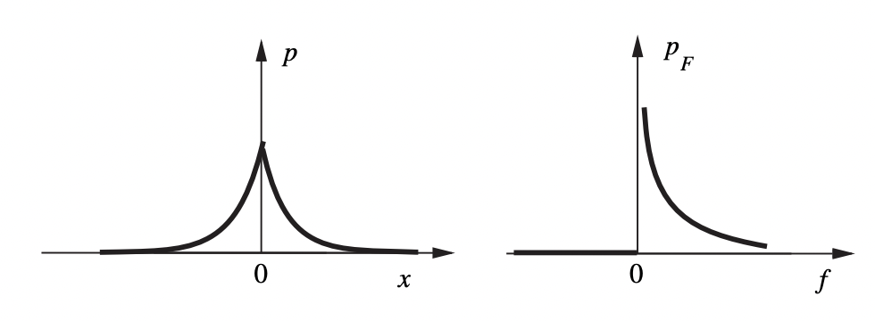
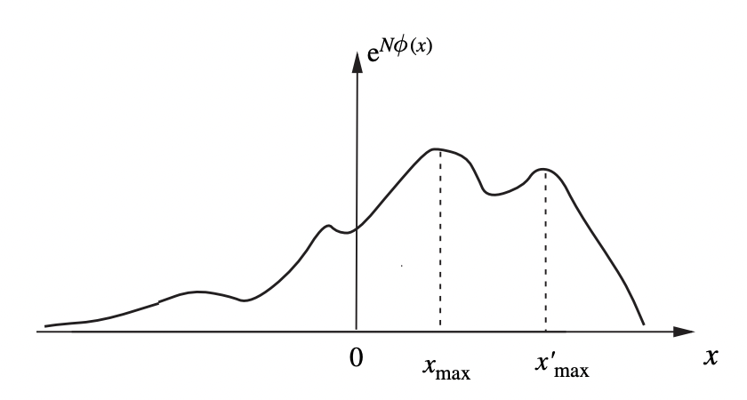

Probability
The laws of thermodynamics are based on observations of macroscopic bodies. They encapsulate the coarse-grained properties of a body like its temperature, pressure, or volume. On the other hand, matter is fundamentally composed of atoms and molecules whose motions are governed by the more fundamental laws of mechanics. In principle, we could describe macroscopic bodies the same way, by examining the motions of every particle inside the body. But this is largely impractical as we’ll see later. A more useful approach is to look at which states large numbers of particles are likely to be in and use that information to make macroscopic predictions. Statistical mechanics is an inherently probabilistic description of a system. As such, it requires an understanding of the mathematical theory of probability, which we’ll discuss here.
Univariate Probability
Probability Measures
At its root, probability is based on the study of events or random variables. Suppose \(\mathcal{S}\) is the set of all possible outcomes of an experiment, called the sample space. Any subset \(E \subset \mathcal{S}\) is called an event. A probability measure is a set function \(\mathbb{Pr}(E)\) that maps events to numerical values between zero and one. It’s meant to formalize the concept of chance. If an event has probability one, we think of that event as being 100% certain to occur. If it has probability zero, we think of the event as having 0% chance to occur. Any values in between mean we’re uncertain whether the event will occur.
Formally, a probability measure on a sample space \(\mathcal{S}\) satisfies the following properties:
- Positivity: For any event \(E \subset \mathcal{S}\), \(\mathbb{Pr}(E) \geq 0\).
- Additivity: If \(A \subset \mathcal{S}\) and \(B \subset \mathcal{S}\) are distinct, disjoint events, then \(\mathbb{Pr}(A \text{ or } B) = \mathbb{Pr}(A) + \mathbb{Pr}(B)\).
- Normalization: For the entire sample space \(\mathcal{S}\), \(\mathbb{Pr}(\mathcal{S}) = 1\).
While this is a nice formal definition of probability, it’s not practically useful for saying how we should design a probability measure in a practical setting. There are two common approaches for designing probability measures:
The objective approach: In this approach, we imagine running a bunch of experiments and counting the frequency of occurrences of an event. That is, if we run a large number \(N\) of experiments and observe an event \(A\) occurs exactly \(N_A\) times, then we define \(\mathbb{Pr}(A)\) by the ratio \[ \boxed{\mathbb{Pr}(A) \equiv \lim_{N \rightarrow \infty} \frac{N_A}{N}} \ . \] The fact that the ratio \(\frac{N_A}{N}\) stabilizes to a fixed value as \(N\) gets infinitely large follows from the law of large numbers, which we’ll take as a kind of experimental fact.
The subjective approach: In this approach we take a more theoretical view by looking for a “maximally random” probability distribution that matches what we know to be true. That is, we seek to find the maximum entropy probability distribution that satisfies some given set of known constraints. We’ll talk more about the principle of maximum entropy when we get to information theory. The subjective approach is the one used most heavily in statistical mechanics.
Random Variables
A random variable is a variable \(X\) that doesn’t take on a fixed value, but rather a random value determined by a probability distribution. If \(E \subset \mathcal{S}\) is an event, a random variable encodes that event using a numerical variable \(X=X(E)\). More formally, \(X(E)\) is a function that maps events to a numerical value. It could be a real number, a complex number, or a real or complex vector, for example.
A one-dimensional random variable is a mapping \(X(E)\) from events \(E \subset \mathcal{S}\) into the real numbers \(\mathbb{R}\). In this case, we can define a cumulative distribution function or CDF as the function \[ \boxed{P(x) \equiv \mathbb{Pr}\big(\{X \leq x\}\big)} \ . \] That is, the CDF is the probability that the random variable \(X \leq x\), where \(x\) is just some real number. To obey the laws of probability, the CDF must satisfy the following properties:
- It’s an increasing function of \(x\). That is, if \(x_1 \leq x_2\) then \(P(x_1) \leq P(x_2)\).
- It has probability zero at \(x=-\infty\). That is, \(\lim_{x \rightarrow -\infty} P(x) = 0\).
- It has probability one at \(x=\infty\). That is, \(\lim_{x \rightarrow \infty} P(x) = 1\).
If the set of all values \(X\) can take on are discrete, we say \(X\) is a discrete random variable. In this case, we can define a probability mass function or PMF as the function \[ \boxed{p(x) \equiv \mathbb{Pr}(X = n)} \ . \] By the laws of probability the PMF must satisfy the following properties:
- It’s between zero and one: \(0 \leq p(n) \leq 1\).
- It sums to one over all values, i.e. \(\sum_{n \in \mathcal{S}} \ p(n) = 1\).
- It’s related to the CDF by \(P(x) = \sum_{n \leq x} \ p(n)\).
If the set of all values it can take on are continuous, we say \(X\) is a continuous random variable. In this case, we can define a probability density function or PDF by the function \[ \boxed{p(x) = \mathbb{Pr}(x \leq X \leq x + dx)} \ . \] By the laws of probability, the PDF must satisfy the following properties:
- It’s a positive function \(p(x) \geq 0\).
- It integrates to one over all values, \(\int_\mathcal{S} p(x) dx = 1\).
- It’s related to the CDF by differentiation, \(p(x) = \frac{d}{dx} P(x)\).
Note that in physics the PDF has units. If \(x\) has units of \([x]\), then evidently \(p(x)\) must have units of \(\frac{1}{[x]}\). This is why we think of the PDF as a density. It’s a probability per unit \(x\).
By convention, if \(S \subset \mathbb{R}\) we’ll assume \(p(x) = 0\) on values of \(x\) outside of \(S\). This means we can treat the PMF as a PDF by using delta functions to indicate where each discrete value of \(x\) has non-zero \(p(x)\). That is, \[ p(k) = p(x) \delta (x - k). \] For this reason, we’ll generally state results in the form of a continuous random variable.
Where there’s no risk of confusion, we’ll frequently abuse notation by using the lower case letter \(x\) for both the random variable as well as the value it can take on.
Moments and Cumulants
For both discrete and continuous random variables we can define the expected value of a random function \(F(x)\) by summing or integrating the function, weighted by the PMF or PDF. In the continuous case, we’d define the expected value \(\langle F(x) \rangle\) by \[ \boxed{\langle F(x) \rangle \equiv \int_{\mathbb{R}} dx \ F(x) p(x)} \ . \] Some of the functions \(F(x)\) have special names:
- We call \(\mu \equiv \langle x \rangle\) the mean of \(x\).
- We call \(\mu_n \equiv \langle x^n \rangle\) the nth moment of \(x\).
- We call \(\langle e^{-ikx} \rangle\) the characteristic function or CF of \(x\).
Note the characteristic function is just the Fourier transform of the PDF since \[ \langle e^{-ikx} \rangle = \tilde p(k) = \int_{\mathbb{R}} dx \ e^{-ikx} p(x). \] This means we can always go from the CF back to the PDF by taking the inverse Fourier transform, \[ p(x) = \int_{\mathbb{R}} \frac{dx}{2\pi} \ e^{ikx} \tilde p(k). \] If we Taylor expand the CF, we can also evidently write \[ \langle e^{-ikx} \rangle = \bigg\langle \sum_{n=0}^\infty \frac{(-ik)^n}{n!} x^n \bigg\rangle = \sum_{n=0}^\infty \frac{(-ik)^n}{n!} \mu_n. \] This means that the CF can be used to generate moments for a given distribution. Once we have a closed form for the CF, just expand it into a series and pick off each \(\mu_n = \langle x^n \rangle\) term by term.
We can translate the CF to any other point \(x_0\) by observing that \[ \langle e^{-ik(x-x_0)} \rangle = \int_{\mathbb{R}} dx \ e^{-ik(x-x_0)} p(x) = e^{ikx_0} \tilde p(k). \] More useful to us in practice is not the characteristic function, but its logarithm, called the cumulant function. We’ll assume we can expand \(\log \tilde p(k)\) as a Taylor Series about \(k=0\) weighted by some coefficients \(\kappa_n\). By expanding out the MGF inside the log, we can evidently then write \[ \log \tilde p(k) = \sum_{n=1}^\infty \frac{(-ik)^n}{n!} \kappa_n = \log\bigg(1 + \sum_{n=1}^\infty \frac{(-ik)^n}{n!} \mu_n \bigg). \] The sum inside the log is of the form \(1+\varepsilon\). We can thus expand the log in powers of \(\varepsilon\) to get \[ \log\big(1 + \varepsilon \big) = 1 + \varepsilon - \frac{1}{2} \varepsilon^2 + \frac{1}{3} \varepsilon^3 - \frac{1}{4} \varepsilon^4 + \cdots \] Using this expansion and matching term-by-term to the original expansion of \(\log \tilde p(k)\) we can find expressions for the coefficients \(\kappa_n\) in terms of the moments \(\mu_n\). These coefficients are called the nth cumulants of \(x\). The first cumulant turns out to be the mean of \(x\), \[ \kappa_1 = \langle x \rangle. \] Intuitively, the mean \(\mu\) of a distribution represents its center of mass or average value. To see why, suppose \(x\) is a discrete random variable taking on values \(1, 2, \cdots, n\) each with probability \(p(x) = \frac{1}{n}\). Then we’d have \[ \mu = \sum_{x=1}^n x p(x) = \frac{1}{n} \sum_{x=1}^n x = \overline x. \] That is, the mean is just the unweighted average \(\overline x\) from elementary math. In general each \(x\) will be weighted by its probability \(p(x)\) giving a weighted average.
The second cumulant is evidently given by \[ \kappa_2 = \langle x^2 \rangle - \langle x \rangle^2. \] This is called the variance of \(x\), usually denoted \(\sigma^2\). By rearranging the right-hand side a little bit we can also write the variance in the form \[ \boxed{\sigma^2 \equiv \langle x^2 \rangle - \langle x \rangle^2 = \langle (x-\mu) \rangle^2} \ . \] This gives an intuitive interpretation of the variance. It’s the mean squared difference from the mean. It’s a squared measure of the spread of the distribution. For this reason we often prefer to take its square root to get a measure of the spread in units of \(x\) itself. This is called the standard deviation, \(\sigma \equiv \sqrt{\sigma^2}\).
The third cumulant is evidently given by \[ \kappa_3 = \langle x^3 \rangle - 3\langle x^2 \rangle\langle x \rangle + 2 \langle x \rangle^3. \] It’s not obvious what this represents, but it turns out to represent the skewness of \(x\). That is, the tendency for the distribution to skew left or right by some amount. A distribution symmetric about its mean will have zero skew since all of the odd moments will vanish, hence \(\kappa_3 = 0\). Strictly speaking, the skewness is often normalized by dividing by \(\sigma^3\).
There’s a useful graphical trick that can be used to quickly find the relationship between cumulants and moments. The idea is to represent the nth cumulant \(\kappa_n\) is a bag of \(n\) points. Then we can get the nth moment by summing over all possible ways of distributing \(n\) points among all possible bags \(1, 2, \cdots, n\). It’s easiest to show this by example. Here’s how to get the first few moments from the first few cumulants:

Change of Variables
Occasionally we’ll want to make a change of variables from one random variable to another. To do that we need to figure out how the probabilities change under the change of variables. Suppose \(F=F(X)\) is a random function of a random variable \(X\). If \(f = F(x)\), then probability that \(X \in [x, x+dx]\) must be the same as the probability that \(F \in [f, f+df]\). Provided \(F(x)\) is single-valued, that means we’d have \[ p_F(f) df = p_X(x) dx. \] Dividing both sides by \(df\) and noting that probabilities have to be positive, we have \[ p_F(f) = p_X(x) \bigg|\frac{dx}{df}\bigg|. \] In general \(F(x)\) need not be single-valued. This means we have to sum over all possible values \(x_i\) such that \(f=F(x_i)\). In this case, we’d instead have \[ \boxed{p_F(f) = \sum p_X(x_i) \bigg|\bigg(\frac{dx}{df}\bigg)_{x=x_i}\bigg|} \ . \]

Example: The Laplace Distribution
Suppose \(p(x) \propto e^{-\lambda |x|}\) where \(\lambda > 0\) is some scale parameter.
Find the normalization constant \(\mathcal{N}\) such that \(p(x) = \mathcal{N} e^{-\lambda |x|}\).
The PDF must integrate to one from \(-\infty\) to \(\infty\). We have \[ 1 = \int_{-\infty}^\infty dx \ p(x) = \int_{-\infty}^\infty dx \ \mathcal{N} e^{-\lambda |x|} = \frac{2\mathcal{N}}{\lambda}. \] Thus, \(\mathcal{N} = \frac{\lambda}{2}\), so we finally just have \(p(x) = \frac{\lambda}{2} e^{-\lambda x}\). This is called the Laplace distribution.
Suppose \(f = x^2\). Find the new PDF \(p_F(f)\) using a change of variables.
This transformation is multi-valued, with \(x = \pm \sqrt{f}\). Using the change of variables, we have \[ \begin{align*} p_F(f) &= p(\sqrt{f}) \bigg|\frac{d}{df} \sqrt{f}\bigg| + p(-\sqrt{f}) \bigg|-\frac{d}{df} \sqrt{f}\bigg| \\ &= \frac{\lambda}{2} e^{-\lambda \sqrt{f}} \bigg(\frac{1}{2\sqrt{f}} + \frac{1}{2\sqrt{f}} \bigg) \\ &= \frac{\lambda}{2\sqrt{f}} e^{-\lambda \sqrt{f}}. \\ \end{align*} \] Note that this new PDF is only defined when \(f \geq 0\) due to the square root.

Probability Distributions
So far I’ve used the term distribution rather loosely. More formally, given a random variable \(x\), a probability distribution is a specific functional form for \(p(x)\). We’d write \(x \sim p(x)\) to indicate that \(x\) is distributed as \(p(x)\). Usually \(p(x)\) will be parametric, meaning it will have external parameters that tune the shape of the distribution. Here are some common univariate distributions we’ll see in statistical mechanics:
Uniform Distribution
The uniform distribution is perhaps the simplest distribution of all, with \(p(x) = const\) on some set \(x \in \mathcal{S}\). As a shorthand we might write \(x \sim U(\mathcal{S})\) to say \(x\) is uniform on the set \(\mathcal{S}\). In the discrete case, \(x\) takes on some number of values \(N\) each with equal probability, for example if \(\mathcal{S} = \{1, 2, \cdots, n\}\) we have \[ \boxed{p(x) = \frac{1}{N}} \ . \] We can easily calculate the moments of a uniform random variable directly. In the discrete case, we’d have \[ \langle x^n \rangle = \sum_{x=1}^N \ x^n \ p(x) = \frac{1}{N} (1^n + 2^n + \cdots + N^n). \] This is just an arithmetic sum in powers of \(n\). For example, the first two moments are \[ \begin{align*} \langle x \rangle &= \frac{(N+1)}{2}, \\ \langle x^2 \rangle &= \frac{(N+1)(2N+1)}{6}. \\ \end{align*} \] Using these we can directly calculate the mean and variance, which are \[ \begin{align*} \mu &= \langle x \rangle = \frac{(N+1)}{2}, \\ \sigma^2 &= \langle x^2 \rangle - \langle x \rangle^2 = \frac{N^2-1}{12}. \\ \end{align*} \] The characteristic function is just given by a geometric series in powers of \(e^{-ik}\), \[ \tilde p(k) = \sum_{x=1}^N p(x) e^{-ikx} = \sum_{x=1}^N \frac{1}{N} \big(e^{-ik}\big)^n = \frac{e^{-ik}-e^{-ik(N+1)}}{1-e^{-ik}}. \] We could in principle calculate the cumulant function \(\log \tilde p(k)\) as well, though it’s clearly not going to be as useful for finding the cumulants here. We’ll see later that the uniform distribution is the maximum entropy distribution when the only known constraints are that \(x\) lies in some set \(S\).
Gaussian Distribution
The Gaussian distribution is one of the most fundamental distributions in physics. In statistical mechanics, for example, it describes the velocity of gases in a box. Suppose \(x\) is a continuous random variable defined on the whole real line. We say it’s Gaussian distributed if its PDF is given by \[ \boxed{p(x) = \frac{1}{\sqrt{2\pi\sigma^2}} \exp\bigg(-\frac{(x-\mu)^2}{2\sigma^2}\bigg)} \ . \] The Gaussian distribution has two parameters, a real number \(\mu\) and a positive number \(\sigma^2\). As a shorthand we’ll sometimes say \(x\) is Gaussian distributed by writing \(x \sim \mathcal{N}(\mu, \sigma^2)\). The PDF’s curve is the distinctive bell-shaped curve that falls off exponentially fast symmetrically around \(\mu\). For practical purposes, almost all of the probability mass lies in the range \(-3\sigma \leq x \leq 3\sigma\).
We can calculate the characteristic function by taking the Fourier transform of \(p(x)\). By using a couple of changes of variables and completing the square inside the exponent, we have, \[ \begin{align*} \tilde p(k) &= \int_\mathbb{R} dx \ p(x) e^{-ikx} \\ &= \frac{1}{\sqrt{2\pi\sigma^2}} \int_\mathbb{R} dx \ e^{-\frac{(x-\mu)^2}{2\sigma^2}-ikx} \\ &= \frac{e^{-ik\mu}}{\sqrt{2\pi\sigma^2}} \int_\mathbb{R} dy \ e^{-\frac{y^2}{2\sigma^2}-ikx} \quad &y \equiv& \ x - \mu \\ &= e^{-ik\mu-\frac{1}{2}k^2 \sigma^2} \int_\mathbb{R} \frac{dz}{\sqrt{2\pi\sigma^2}} \ e^{-\frac{z^2}{2\sigma^2}} \quad &z \equiv& \ y + ik\sigma^2 \\ &= e^{-ik\mu-\frac{1}{2}k^2 \sigma^2}. \\ \end{align*} \] Notice the characteristic function is also itself a Gaussian, just with an imaginary shift. Taking the log immediately gives the cumulant function, which is just the exponent terms, \[ \log \tilde p(k) = -ik\mu-\frac{1}{2}k^2 \sigma^2. \] Notice only the first two powers of \(k\) appear in the cumulant. This means \(\kappa_1 = \mu\), \(\kappa_2 = \sigma^2\), and all higher cumulants are zero. Evidently, the parameter \(\mu\) is just the mean and the parameter \(\sigma^2\) is just the variance.
If we like, we can use the graphical trick to read off the moments as well. In this case, there can’t be any bags with more than two points, which greatly simplifies terms. The first few moments are, \[ \begin{align*} \langle x \rangle &= \kappa_1 = \mu, \\ \langle x^2 \rangle &= \kappa_2 + \kappa_1^2 = \sigma^2 + \mu^2, \\ \langle x^3 \rangle &= 3 \kappa_2 \kappa_1 + \kappa_1^3 = 3\sigma^2 \mu + \mu^3, \\ \langle x^4 \rangle &= 3 \kappa_2^2 + 6 \kappa_2 \kappa_1^2 + \kappa_1^4 = 3\sigma^4 + 6 \sigma^2 \mu^2 + \mu^4. \end{align*} \] ### Binomial Distribution
Suppose we have a binary random variable \(x = 0, 1\) that takes on the value one with a fixed probability \(p\). We can express its PMF simply as \[ p(x) = p^x (1-p)^{1-x}. \] We’d call such an \(x\) a Bernoulli random variable. A common example would be flipping a coin, where heads occurs with a fixed probability \(p=0.5\). Now suppose we allow the binary outcome to repeat \(n\) times independently. It turns out that the sum of those \(n\) outcomes is distributed in a similar way, except now \(x\) can take on any value in the range \(x = 0, 1, \cdots, n\). Accounting for normalization, we have \[ \boxed{p(x) = \binom{n}{x} p^x (1-p)^{n-x}} \ . \] We’d say \(x\) is binomially distributed with parameters \(p\) and \(n\), sometimes written as \(x \sim \text{Bin}(n,p)\). The normalization constant is the binomial coefficient, \[ \binom{n}{x} \equiv \frac{n!}{x!(n-x)!}. \] The binomial coefficient represents the number of ways to choose \(x\) points from a total of \(n\) points, assuming the order the points are chosen is irrelevant.
The characteristic function of the binomial distribution can be found using the binomial theorem, \[ \begin{align*} \tilde p(k) &= \sum_{x=0}^n \binom{n}{x} p^x (1-p)^{n-x} e^{-ikx} \\ &= \sum_{x=0}^n \binom{n}{x} \big(p e^{-ik}\big)^x (1-p)^{n-x} \\ &= \big(pe^{-ik} + (1-p) \big)^n. \end{align*} \] Notice the parameter \(n\) appears only in the exponent. This means the cumulant function is just \(n\) times the cumulant function for the Bernoulli distribution, \[ \log \tilde p_n(k) = n \log \tilde p_1(k). \] In particular, the cumulants are all proportional to \(n\) times the Bernoulli cumulants. Expanding out \(\log \tilde p_1(k)\), we have \[ \begin{align*} \log \tilde p_1(k) &= \log\big(pe^{-ik} + (1-p)\big) \\ &= \log\big(1 + p(e^{-ik}-1)\big) \\ &= p(e^{-ik}-1) - \frac{1}{2} p^2(e^{-ik}-1)^2 + \cdots \\ &= p\bigg(-ik + \frac{(-ik)^2}{2} + \cdots\bigg) - \frac{1}{2} p^2 \bigg(-ik + \frac{(-ik)^2}{2} + \cdots\bigg)^2 + \cdots \\ &= -ik p + \frac{(-ik)^2}{2} p(1-p) + \cdots \end{align*} \] Thus, the mean and variance of the binomial distribution are just \[ \mu = np, \quad \sigma^2 = np(1-p). \] These distributions can be straight-forwardly generalized to situations with more than binomial outcomes. The Bernoulli distribution generalizes to the categorical distribution, where \(x\) is allowed to be one of \(k\) categories, each with a fixed probability \(p_j\). Clearly those probabilities must sum to one. If the categories are \(x = 1, 2, \cdots, k\) the PMF would be given by \[ p(x) = p_1^{\delta_{1x}} p_2^{\delta_{2x}} \cdots p_k^{\delta_{kx}}, \quad x = 1, 2, \cdots, k. \] The binomial distribution generalizes to the multinomial distribution, where \(x\) is now a vector whose jth component is the number of times category \(j\) occurred in \(n\) total trials. Each \(x_j = 0, 1, \cdots, n_j\) is essentially its own binomial distribution, except we require \(n = n_1 + n_2 + \cdots n_k\). The PMF is given by \[ p(x) = \frac{n!}{n_1!n_2!\cdots n_k!} p_1^{n_1} p_2^{n_2} \cdots p_2^{n_2}. \] The coefficient \(\frac{n!}{n_1!n_2!\cdots n_k!}\) is called a multinomial coefficient. It’s a count of the number of ways to distribute \(n\) points into \(k\) bins such that each bin \(j\) contains exactly \(n_j\) points. We might say \(x\) is multinomially distributed by writing \(x \sim \text{Multinomial}(n_1,n_2,\cdots,n_k; p_1, p_2, \cdots, p_k)\).
Poisson Distribution
Suppose we’re interested in answering the following question: What is the probability that \(x\) events occur inside a time interval \([0,T]\) provided each event is independent of the others, and that the probability of any one event occurring in an infinitesimal interval \([0,dt]\) is a constant \(\alpha dt\). To figure out what \(p(x)\) is, let’s imagine subdividing \([0,T]\) up into \(N = \frac{T}{dt}\) subintervals. In each subinterval, any single event is a Bernoulli random variable that either occurs with probability \(\alpha dt\) or doesn’t occur with probability \((1-\alpha)dt\). If we assume each subinterval is independent of the others, the characteristic function of \(p(x)\) is just \[ \begin{align*} \tilde p(k) &= (\tilde p_1(k))^N \\ &= \big(\alpha e^{-ik}dt + (1-\alpha)dt\big)^N \\ &= \big(1 + \alpha dt(e^{-ik}-1)\big)^{T/dt} \\ &\approx e^{\alpha T(e^{-ik} - 1)}. \\ \end{align*} \] The last equality becomes exact when \(dt\) is infinitesimal. Let’s define \(\lambda \equiv \alpha T\) as a dimensionless rate parameter. Then we can write the characteristic function as \[ \tilde p(k) = e^{\lambda(e^{-ik} - 1)}. \] To get the sought after PDF \(p(x)\) we just need to take the inverse Fourier transform of \(\tilde p(k)\). We have \[ \begin{align*} p(x) &= \int_{\mathbb{R}} \frac{dk}{2\pi} \ \tilde p(k) e^{ikx} \\ &= \int_{\mathbb{R}} \frac{dk}{2\pi} \ e^{\lambda (e^{-ik}-1)}e^{ikx} \\ &= e^{-\lambda} \int_{\mathbb{R}} \frac{dk}{2\pi} \ e^{ikx} \sum_{n=0}^\infty \frac{(\lambda e^{-ik})^n}{n!} \\ &= e^{-\lambda} \sum_{n=0}^\infty \frac{\lambda^n}{n!} \int_{\mathbb{R}} \frac{dk}{2\pi} e^{-ik(x-n)} \\ &= e^{-\lambda} \sum_{n=0}^\infty \frac{\lambda^n}{n!} \delta(x-n). \\ \end{align*} \] The delta function forces \(x\) to be a positive integer for \(p(x)\) to be non-zero. That is, \(p(x)\) is actually a PMF \[ \boxed{p(x) = e^{-\lambda} \frac{\lambda^x}{x!}} \ . \] This is called the Poisson distribution. The Poisson distribution is used to model counts of events, where each event is allowed to occur independently with some fixed rate \(\lambda = \alpha T\). We can denote that \(x\) is Poisson distributed by writing \(x \sim \text{Poisson}(\lambda)\).
This distribution has the unusual property that all its cumulants are equal. Indeed, observe we have \[ \log \tilde p(k) = \lambda (e^{-ik} - 1) = \sum_{n=1}^\infty \frac{(-ik)^n}{n!} \lambda. \] That is, all the cumulants are just \(\lambda\). In particular, \(\mu = \sigma^2 = \lambda\).
Multivariate Probability
Random Vectors
Let’s now look at the situation where we have \(N\) random variables \(X_1, X_2, \cdots, X_N\). The vector of all such random variables is called a random vector, i.e. a vector \(\mathbf{X} = (X_1, X_2, \cdots, X_N)\). To each random vector we can assign a joint CDF of the form \[ P(\mathbf{x}) \equiv \mathbb{Pr}(\{\mathbf{X} \leq \mathbf{x}\}) = \mathbb{Pr}(\{X_1 \leq x_1, X_2 \leq x_2, \cdots, X_N \leq x_N\}). \] The CDF must be an increasing function in each \(x_i\), go to \(0\) as all \(x_i \rightarrow -\infty\), and go to \(1\) as all the \(x_i \rightarrow \infty\).
If \(\mathbf{X}\) is discrete, we can assign a joint PMF to each value in the support \(S \in \mathbb{R}^N\) by defining \[ \boxed{p(\mathbf{x}) \equiv \mathbb{Pr}(\{\mathbf{X} = \mathbf{x}\})} \ . \] The joint PMF is a valid probability, meaning it must satisfy \(0 \leq p(\mathbf{n}) \leq 1\) and \(\sum_{\mathbf{n} \in S} p(\mathbf{n}) = 1\).
Similarly, if \(\mathbf{X}\) is continuous, we can assign a joint PDF to each value in \(S \in \mathbb{R}^N\) by defining \[ p(\mathbf{x}) d^Nx \equiv \mathbb{Pr}(\{x_1 \leq X_1 \leq x_1 + dx_1, x_2 \leq X_2 \leq x_2 + dx_2, \cdots, x_N \leq X_N \leq x_N + dx_N\}), \] where \(d^N x = dx_1dx_2\cdots dx_N\) is the \(N\)-dimensional volume element. The joint PMF must satisfy both \(p(\mathbf{x}) \geq 0\), and \(\int_S d^N x \ p(\mathbf{x}) = 1\). Clearly the joint PMF is just a special case of the joint PDF, since we can always just use delta functions to express a PMF as a PDF.
As with ordinary random variables, we’ll frequently abuse notation by using \(\mathbf{x}\) for both the random vector itself as well as its value where there’s no risk of confusion.
Joint Moments and Cumulants
For any function \(F(\mathbf{x})\) of a random vector \(\mathbf{x}\) we can define its expectation value as \[ \boxed{\langle \mathbf{x} \rangle \equiv \int_S d^N x \ F(\mathbf{x}) p(\mathbf{x})} \ . \] For both discrete and continuous random vectors we can define the joint characteristic function \[ \boxed{\tilde p(\mathbf{k}) \equiv \langle e^{-i\mathbf{k} \cdot \mathbf{x}} \rangle \equiv \int_{\mathbb{R}^N} d^Nx \ p(\mathbf{x}) e^{-i\mathbf{k} \cdot \mathbf{x}}} \ . \] By taking the logarithm of the joint CF, we can also define the joint cumulant function \(\log \tilde p(\mathbf{k})\). From these two functions we can extract the joint moments and cumulants. The \(n_1, n_2, \cdots, n_N\) joint moment \(\mu_{n_1,n_2,\cdots,n_N} \equiv \langle x_1^{n_1} x_2^{n_2} \cdots x_N^{n_N} \rangle\) of \(\mathbf{X}\) is given by taking partial derivatives of the joint characteristic function, \[ \langle x_1^{n_1} x_2^{n_2} \cdots x_N^{n_N} \rangle \equiv \frac{\partial^{n_1}}{\partial (-i k_1)^{n_1}} \frac{\partial^{n_2}}{\partial (-i k_2)^{n_2}} \cdots \frac{\partial^{n_N}}{\partial (-i k_N)^{n_N}} \tilde p(k_1, k_2, \cdots, k_N) \bigg |_{k_1=k_2=\cdots=k_N=0}. \] Similarly, the \(n_1, n_2, \cdots, n_N\) joint cumulant \(\kappa_{n_1,n_2,\cdots,n_N}\) is given by taking partial derivatives of the joint cumulant function, \[ \kappa_{n_1,n_2,\cdots,n_N} \equiv \frac{\partial^{n_1}}{\partial (-i k_1)^{n_1}} \frac{\partial^{n_2}}{\partial (-i k_2)^{n_2}} \cdots \frac{\partial^{n_N}}{\partial (-i k_N)^{n_N}} \log \tilde p(k_1, k_2, \cdots, k_N) \bigg |_{k_1=k_2=\cdots=k_N=0}. \] The sum \(n \equiv n_1 + n_2 + \cdots n_N\) determines the order of the moment or cumulant. Of particular interest are the first and second cumulants. The first cumulants are the means \(\mu_i \equiv \langle x_i \rangle\). We can think of these together by putting them all into a mean vector \(\boldsymbol{\mu} \equiv \langle \mathbf{x} \rangle \equiv \big(\mu_1, \mu_2, \cdots, \mu_N\big)\). The second cumulants are the covariances, \(\sigma_{ij} \equiv \kappa_{ij}\). We can put all these into an \(N \times N\) matrix to get the covariance matrix \(\mathbf{\Sigma} \equiv \big(\sigma_{ij}\big)_{i,j=1,\cdots,N}\). The diagonal entries of the covariance matrix correspond to the usual variances \(\sigma_i^2 = \sigma_{ii}\). The off diagonal terms are the covariances, capturing the dependence or correlation between \(x_i\) and \(x_j\).
We can use the same graphical trick to express joint cumulants in terms of joint moments. The only difference is we need to label each point by its index and bag them appropriately. We can use this to show that the covariance \(\sigma_{ij} \equiv \kappa_{ij}\) can be written as \[ \sigma_{ij} = \langle x_i x_j \rangle - \langle x_i \rangle \langle x_j \rangle = \langle (x_i - \mu_i)(x_j - \mu_j) \rangle. \] In matrix notation, the entire covariance matrix can be expressed using moments as \[ \boxed{\mathbf{\Sigma} = \langle \mathbf{x}\mathbf{x}^\top \rangle - \langle \mathbf{x} \rangle \langle \mathbf{x} \rangle^\top = \langle (\mathbf{x}-\boldsymbol{\mu})(\mathbf{x}-\boldsymbol{\mu})^\top \rangle} \ . \] This implies the covariance matrix must in fact be a positive semi-definite matrix. That is, \[ \mathbf{\Sigma} = \mathbf{\Sigma}^\top, \quad \mathbf{v}^\top\mathbf{\Sigma}\mathbf{v} \geq 0 \quad \forall \mathbf{v} \neq \mathbf{0}. \]
Conditional and Marginal Probability
We can get smaller joint probabilities by “summing out” the random variables we don’t need. These are called marginal probabilities or unconditional probabilities. For example, if we have two random variables \(x\) and \(y\), the marginal PDF \(p(y)\) is given by integrating \(x\) out of the joint PDF \(p(x,y)\), \[ \boxed{p(y) \equiv \int_\mathbb{R} dx \ p(x,y)} \ . \] If we have \(N\) random variables \(x_1,x_2,\cdots, x_s, x_{s+1},\cdots,x_N\) and integrate out the last \(N-s\) variables \(x_s, x_{s+1},\cdots,x_N\), then we get the marginal PDF \(p(x_1,x_2,\cdots, x_s)\), \[ p(x_1,x_2,\cdots, x_s) \equiv \int_{\mathbb{R}^{N-s}} dx_s, dx_{s+1},dx_N \ p(x_1,x_2,\cdots, x_s, x_s, x_{s+1},\cdots,x_N). \] Similarly, we can define the conditional probabilities, which allow for random variables to depend on the outcome of other random variables directly. For example, for two random variables \(x\) and \(y\) with joint PDF \(p(x,y)\), we can define the conditional probability of \(y\) given \(x\) as \[ \boxed{p(y|x) \equiv \frac{p(x,y)}{p(x)}} \ . \] We can think of \(p(x,y)\) as a kind of prior distribution and \(p(x)\) as a kind of normalization constant. Notice we can similarly write \(p(x,y) = p(x|y) p(y)\). If we plug this into the formula for \(p(y|x)\) we get the well-known Bayes’ Rule, which says that \[ p(y|x) = \frac{p(x|y)p(y)}{p(x)}. \] If we have \(N\) random variables \(x_1,x_2,\cdots, x_s, x_{s+1},\cdots,x_N\) and want to condition the first \(s\) variables on the last \(N-s\) variables, we’d similarly write \[ p(x_1,x_2,\cdots, x_s) \equiv \frac{p(x_1,x_2,\cdots, x_s, x_{s+1},\cdots,x_N)}{p(x_{s+1},\cdots,x_N)}. \] We haven’t proven it, but it’s not hard to show that the marginal and conditional probabilities are indeed valid probabilities and PDFs.
When conditioning a random variable \(y\) on another random variable \(x\) gives no information about \(y\), we say that \(x\) and \(y\) are independent, sometimes written \(x \perp y\). If \(x\) gives no information about \(y\), that means we must have \(p(y|x) = p(y)\), which is equivalent to saying the joint PDF factors, \(p(x,y) = p(x) p(y)\). Clearly, if \(x\) gives no information about \(y\), then \(y\) gives no information about \(x\) either. Independence is symmetric.
More generally, we say \(N\) random variables \(x_1,x_2,\cdots,x_N\) are mutually independent provided \[ \boxed{p(x_1,x_2,\cdots,x_N) = p_1(x_1) p_2(x_2) \cdots p_N(x_N)} \ . \] In the special case where all \(N\) variables also happen to come from the same distribution \(p(x)\) we say they’re independent identically distributed or IID. In this simple case we just have \[ p(x_1,x_2,\cdots,x_N) = \big(p(x)\big)^N. \] Independent random variables have the property that their mixed cumulants will always be zero. This is equivalent to saying that the joint expectation of any product of random variables value factors, \[ \langle F_1(x_1) F_2(x_2) \cdots F_N(x_N) \rangle = \langle F_1(x_1) \rangle \langle F_2(x_2) \rangle \cdots \langle F_N(x_N) \rangle. \]
The Multivariate Gaussian Distribution
While there are many joint probability distributions, the most important one to be aware of is the multivariate Gaussian distribution. Suppose \(\mathbf{x} = (x_1, x_2, \cdots, x_N)\) are independent, with each \(x_i\) Gaussian distributed with mean \(\mu_i\) and variance \(\sigma_i^2\). Then it’s easy to show their joint PDF is given by \[ p(x_1, x_2, \cdots, x_N) = \bigg(\frac{1}{(2\pi)^N\sigma_1^2\sigma_2^2\cdots\sigma_N^2}\bigg)^{1/2} \exp\bigg(-\frac{1}{2} \sum_{i=1}^N \frac{(x_i-\mu_i)^2}{\sigma_i^2} \bigg). \] But what if \(\mathbf{x}\) is not independent? All we have to do in that case is make a change of basis. Notice that joint PDF above is just the diagonalized form for the following joint PDF in vector form, \[ \boxed{p(\mathbf{x}) = \bigg(\frac{1}{(2\pi)^N \det(\mathbf{\Sigma})}\bigg)^{1/2} \exp\bigg(-\frac{1}{2} (\mathbf{x} - \boldsymbol{\mu})^\top \mathbf{\Sigma}^{-1}(\mathbf{x} - \boldsymbol{\mu}) \bigg)} \ . \] By making a change of basis or rotating \(\mathbf{\Sigma}\), this vectorized PDF gives the most general form of the Gaussian distribution for \(N\) variables. This is the multivariate Gaussian distribution, denoted \(\mathbf{x} \sim \mathcal{N}(\boldsymbol{\mu},\mathbf{\Sigma})\).
Using the same diagonalization trick, it’s just as easy to show that the joint characteristic function is \[ \boxed{\tilde p(\mathbf{k}) = \exp(-i\mathbf{k} \cdot \boldsymbol{\mu} - \frac{1}{2} \mathbf{k}^\top \mathbf{\Sigma} \mathbf{k})} \ , \] and the joint cumulant is just \(\log \tilde p(\mathbf{k}) = -i\mathbf{k} \cdot \boldsymbol{\mu} - \frac{1}{2} \mathbf{k}^\top \mathbf{\Sigma} \mathbf{k}\). This again implies that only the first and second joint cumulants are non-zero for the multivariate Gaussian. All higher-order terms vanish. For this reason, multivariate Gaussian random variables satisfy a special condition known as Wick’s Theorem.
Wick’s Theorem: Suppose \(\mathbf{x} = (x_1, x_2, \cdots, x_N)\) is a Gaussian random vector with mean \(\boldsymbol{\mu} = \mathbf{0}\). Then the \(n\)th joint moments are given by \[ \boxed{ \langle x_1^{n_1} x_2^{n_2} \cdots x_N^{n_N} \rangle = \begin{cases} 0 & n = \text{odd} \\ \text{sum of all pairwise contractions} & n = \text{even} \\ \end{cases} } \ . \] For example, suppose we wanted to calculate \(\langle x_1^2 x_2 x_3 \rangle\). In this case, the possible pairwise contractions are
- \(x_1 x_1\) and \(x_2 x_3\) , which gives a term \(\sigma_{11} \sigma_{23}\),
- \(x_1 x_2\) and \(x_1 x_3\) , which gives a term \(\sigma_{12} \sigma_{13}\),
- \(x_1 x_3\) and \(x_1 x_2\) , which gives a term \(\sigma_{13} \sigma_{12}\).
Summing each of these pairwise contractions together, we just have \[ \langle x_1^2 x_2 x_3 \rangle = \sigma_{11} \sigma_{23} + 2 \sigma_{12} \sigma_{13}. \]
Asymptotic Analysis
In this section we’ll focus on important results that apply for large numbers of random variables \(N \gg 1\).
The Central Limit Theorem
It turns out that the sum of random variables will often by approximately Gaussian distributed provided some minor regularity assumptions are met. This important result is called the central limit theorem.
Central Limit Theorem: Suppose \(x = \sum_{i=1}^N x_i\) is a sum of \(N\) IID random variables with finite mean \(\mu\) and variance \(\sigma^2\). Then when \(N \gg 1\) the probability density satisfies \[ \boxed{p\bigg(\frac{x-N\mu}{\sqrt{N\sigma^2}}\bigg) \approx \frac{1}{\sqrt{2 \pi}} \exp\bigg(-\frac{1}{2}\bigg(\frac{x-N\mu}{\sqrt{N\sigma^2}}\bigg)^2\bigg)} \ . \] Proof: Suppose each \(x_i\) is IID with distribution \(p_1(x_1)\). The characteristic function for \(p(x)\) must then be \[ \tilde p(k) = \langle e^{-i kx} \rangle = \langle e^{-i k\sum_{i=1}^N x_i} \rangle = \prod_{i=1}^N \langle e^{-i k x_i} \rangle = \tilde p(k_1, k_2, \cdots, k_N) \bigg |_{k_1=k_2=\cdots=k_N=k}. \] If we take the cumulant function \(\log \tilde p(k)\) and expand it out directly, we have \[ \log \tilde p(k) = \sum_{n=1}^\infty \frac{(-ik)^n}{n!} \kappa_n(x) = -ik \kappa_1(x) + \frac{(-ik)^2}{2} \kappa_2(x) + \cdots \] Expanding out the cumulant function \(\log \tilde p(k_1, k_2, \cdots, k_N)\) and setting all \(k_i=k\), we have \[ \begin{align*} \log \tilde p(k_1, k_2, \cdots, k_N) &= \sum_{n=0}^\infty \sum_{\sum n_j=n} \frac{(-ik_1)^{n_1} (-ik_2)^{n_2} \cdots (-ik_N)^{n_N}}{n!} \kappa_{n_1 n_2 \cdots n_N} \bigg |_{k_1=k_2=\cdots=k_N=k} \\ &= \sum_{n=0}^\infty \sum_{\sum n_j=n} \frac{(-ik)^n}{n!} \kappa_{n_1 n_2 \cdots n_N} \\ &= (-ik) \sum_{\sum n_j=1} \kappa_{n_1 n_2 \cdots n_N} + \frac{(-ik)^2}{2} \sum_{\sum n_j=2} \kappa_{n_1 n_2 \cdots n_N} + \cdots \end{align*} \] Equating the two equations, we thus have \[ \kappa_n(x) = \sum_{\sum n_j=n} \kappa_{n_1 n_2 \cdots n_N}. \] That is, the \(n\)th cumulant of the sum is the sum of all the joint \(n\)th cumulants. Now, suppose all the \(x_i\) are independent. Then their joint PDF must factor as \[ p(x_1,x_2,\cdots,x_N) = p_1(x_1) p_2(x_2) \cdots p_N(x_N). \] Moreover, since their mixed cumulants must be zero, the cumulants of the sum further reduce to \[ \kappa_n(x) = \sum_{i=1}^N \kappa_n(x_i), \] Now suppose all the \(x_i\) are identically distributed with the same PDF \(p_1(x_i)\). Then we further have just \[ \kappa_n = N \kappa_{n,i}. \] Define another random variable \(y\) by re-centering and rescaling \(x\) as \[ z \equiv \frac{x - N\mu}{\sqrt{N\sigma^2}}. \] Then the cumulants of \(z\) are given by \[ \begin{align*} \kappa_1(z) &= 0, \\ \kappa_2(z) &= 1, \\ \kappa_n(z) &= \frac{N\kappa_n(x_1)}{(N\sigma^2)^{n/2}} = O\big(N^{1-n/2}\big). \\ \end{align*} \] The higher order cumulants of \(z\) evidently go to zero when \(N \gg 1\). But we already know the only distribution whose higher moments are zero is the Gaussian distribution. Thus, we’ve shown \[ p(z) \approx \frac{1}{\sqrt{2 \pi}} e^{-\frac{z^2}{2}}. \qquad \text{Q.E.D.} \] Note the central limit theorem is also true for non-IID random variables, provided the higher cumulants decay as \(\kappa_n(x) = O(N^{n/2})\).
In the proof of the CLT we implicitly assumed that the cumulants were all finite. What if that weren’t the case? This will happen if the PDF of each \(x_i\) is heavy-tailed. Heavy-tailed distributions are commonly used to model rare events. It turns out then that the sum won’t in general converge to a Gaussian. In fact, if it does converge, it’ll converge to a Levy distribution, a general class of heavy-tailed distributions.
The Saddlepoint Approximation
In the section on thermodynamics, we saw both intensive variables and extensive variables. The intensive variables are ones that don’t depend on particle number at all, i.e. they’re \(O(1)\) functions of \(N\). The extensive variables are linear in particle number, i.e. they’re \(O(N)\). In principle we could imagine other functional dependences on \(N\) as well. For example, a variable could be polynomial in \(N\), i.e. \(O(N^p)\) for some \(p\). More importantly, a variable can be exponential in \(N\), i.e. \(O(e^{N\phi})\) for some \(\phi\). For example, the volume of a gas would be a variable that can scale exponentially with \(N\), since it often goes like \(V^N\).
When \(N \gg 1\), the sum of many exponential variables can be well approximated by the maximum term. Suppose we have \(n\) non-negative variables \(x_1,x_2,\cdots,x_n\) of the form \(x_i \sim e^{N\phi_i}\) as \(N \rightarrow \infty\). Then their sum \(S = \sum x_i\) satisfies \[ S \sim x_{max} = \max_{i=1,\cdots,n} x_i, \quad \text{when} \quad N \rightarrow \infty. \] When each \(x_i = A_i e^{N\phi_i}\), this just says \(S \approx A_{max} e^{N\phi_{max}}\) when \(N \gg 1\). To see why this fact is true, note that since each \(x_i \geq 0\), we must have \(x_{max} \leq S \leq nx_{max}\). Since the logarithm is monotonic, if we take the log of each term and divide by \(N\), we have \[ \frac{\log x_{max}}{N} \leq \frac{\log S}{N} \leq \frac{\log x_{max}}{N} + \frac{\log n}{N}. \] If we take \(N \rightarrow \infty\) while holding \(n\) fixed, then the term \(\frac{\log n}{N} \rightarrow 0\), which gives \[ \frac{\log S}{N} \sim \frac{\log x_{max}}{N} = \phi_i. \]
More useful for our purposes will be the continuous analog of this result, the saddlepoint approximation.
Saddlepoint Approximation: Suppose we have a function of the form \(f(x) = e^{N\phi(x)}\) where \(\phi(x)\) grows polynomially. Then we have \[ \boxed{S = \int_\mathbb{R} dx \ e^{N\phi(x)} \sim \sqrt{\frac{2\pi}{N|\phi''(x_{max})|}} e^{N\phi_{max}}} \ , \quad \text{as} \ \ N \rightarrow \infty. \] Proof: To see why this is true let’s first Taylor expand \(\phi(x)\) around its global maximum \(x_{max}\). Since \(\phi'(x_{max}) = 0\) and \(\phi''(x_{max}) \leq 0\), we have \[ \phi(x) = \phi(x_{max}) - \frac{1}{2} |\phi''(x_{max})| (x-x_{max})^2 + O\big((x-x_{max})^3\big). \] Plugging this into the integral and simplifying then gives \[ \begin{align*} S &= \int_\mathbb{R} dx \ \exp\bigg(N\phi_{max} - \frac{N}{2} |\phi''(x_{max})| (x-x_{max})^2 + \frac{N}{6} |\phi'''(x_{max})| (x-x_{max})^3 + \cdots\bigg) \\ &= \int_\mathbb{R} dx \ \exp\bigg(N\phi_{max} - \frac{N}{2} |\phi''(x_{max})| (x-x_{max})^2\bigg) \exp\bigg(\frac{N}{6} |\phi'''(x_{max})| (x-x_{max})^3 + \cdots\bigg) \\ &= e^{N\phi_{max}} \int_\mathbb{R} dx \ \exp\bigg(- \frac{N}{2} |\phi''(x_{max})| (x-x_{max})^2\bigg) \bigg(1 + \frac{N}{6}|\phi'''(x_{max})|(x-x_{max})^3 + \cdots\bigg) \\ &= e^{N\phi_{max}} \sqrt{\frac{2\pi}{N|\phi''(x_{max})|}} \bigg(1 + O\bigg(\frac{1}{N}\bigg)\bigg). \end{align*} \] The last line follows from the fact that the integral with \((x-x_{max})^3\) vanishes since it’s an odd function, which means the next term \((x-x_{max})^4\) has to be considered, which integrates to order \(O\big(N^{-3/2}\big)\).
Now, let’s again look at \(\frac{\log S}{N}\) as \(N \rightarrow \infty\). We have \[ \frac{\log S}{N} = \phi_{max} - \frac{1}{2N} \log \frac{N|\phi''(x_{max})|}{2\pi} + O\bigg(\frac{1}{N^2}\bigg). \] We can see that as \(N \rightarrow \infty\), \(\frac{\log S}{N} \rightarrow \phi_{max}\) with a correction of order \(O\big(\frac{\log N}{N}\big)\). \(\text{Q.E.D.}\)
It’s interesting to observe that only the global maximum appears in this approximation. What if \(\phi(x)\) had some other local maximum \(\phi(x_{max}')\)? Strictly speaking we’d have to do the same approximation scheme about each of the maxima one-by-one. However, due to the presence of the exponential, if \(\phi(x_{max}') < \phi(x_{max})\), then for large \(N\) we’d have \[ e^{N\phi(x_{max}')} \ll e^{N\phi(x_{max})}. \] In the limit where \(N \rightarrow \infty\), the correction term \(e^{-N\big(\phi(x_{max})-\phi(x_{max}')\big)} \rightarrow 0\). In this sense, we can indeed neglect the other local maxima as long as they’re less than \(\phi(x_{max})\) and \(N \gg 1\).

By far the most useful corollary to this result for our purposes is the Stirling Approximation.
Stirling Approximation: As \(N \rightarrow \infty\), we have \[ \boxed{N! \sim N^N e^{-N} \sqrt{2\pi N}} \ . \] Proof: Observe by induction that we can write \(N!\) as the following integral, \[ N! = \int_0^\infty dx \ x^N e^{-x} = \int_0^\infty dx \ \exp\bigg(N\bigg(\log x - \frac{x}{N}\bigg)\bigg). \] Take \(\phi(x) = \log x - \frac{x}{N}\). This function is maximized when \(x_{max} = N\), where \(\phi_{max} = \log N - 1\). At this point we have \(\phi''(x_{max}) = - \frac{1}{N^2}\). Plugging all this into the saddlepoint approximation, we have \[ \begin{align*} N! &= e^{N(\log N - 1)} \sqrt{\frac{2\pi}{N|-N^{-2}|}} \bigg(1 + O\bigg(\frac{1}{N}\bigg)\bigg) \\ &= N^N e^{-N} \sqrt{2\pi N} \bigg(1 + O\bigg(\frac{1}{N}\bigg)\bigg). \quad \text{Q.E.D.} \end{align*} \] Usually we’ll be more interested in \(\log N!\) rather than \(N!\) itself. In that case we just have \[ \log N! = N \log N - N + \frac{1}{2} \log 2\pi N + O\bigg(\frac{1}{N}\bigg). \] We’ll typically imagine \(N\) to be really big, like \(N \sim 10^{23}\). In that case we can neglect the sublinear terms and safely write \[ \boxed{\log N! \approx N\log N - N} \ . \] This will usually be the form of Stirling’s approximation that we use in practice.
Information Theory
Information and Entropy
We can think about probabilities in a completely different sense by thinking about the information content contained in a system and how uncertain we are about what that information content is. Suppose we wanted to transmit a message containing \(N\) characters, where each character is sampled from some alphabet \(\Sigma\) containing \(M\) total characters. We’d like to ask the following question: How many bits of information does a typical message of \(N\) characters from this alphabet contain?
Suppose we had no information at all about how often any one particular character \(x_m \in \Sigma\) occurs in a message. In this case, we’d have to assume that all messages of length \(N\) are typical. Since there are \(M^N\) possible messages of length \(N\), we’d say there are \(g = M^N\) typical messages. Since \(g\) contains \(\log_2 g\) bits of information, this means a typical message would contain \(\log g = N \log_2 M\) bits of information.
Suppose now that we had an estimate of the frequency \(p_m\) that each character \(x_m \in \Sigma\) occurs in a message. That is, in a message of length \(N\), we expect each character \(x_m\) to occur \(N_m \approx Np_m\) total times, or to be more precise \(N_m = Np_m + O\big(\sqrt{N}\big)\) since each character is a Bernoulli random variable, hence a message of length \(N\) is a binomial random variable. In this case, the number of typical messages is just the number of ways of placing \(N\) random characters into \(M\) bins of sizes \(N_1, N_2, \cdots, N_M\), which is \[ g = \frac{N!}{\prod_{m=1}^M N_m!}. \] The total number of bits contained in a typical message would then be \(\log_2 g\). If we assume the message length \(N\) is large compared to the alphabet size \(M\), then we can apply the Stirling approximation to each term containing a factorial. Using the fact \(N_m = Np_m\) and \(\sum N_m = N\), we have \[ \begin{align*} \log_2 g &= \log_2 N! - \sum_{m=1}^M \log_2 N_m! \\ &\approx \big(N\log_2 N - N\big) - \sum_{m=1}^M \big(N_m \log_2 N_m - N_m \big) \\ &\approx N \log_2 N - \sum N_m \log_2 N_m \\ &\approx - N \sum_{m=1}^M p_m \log_2 p_m. \end{align*} \] The term \(-\sum p_m \log_2 p_m\) is just a function of the underlying probability distribution of characters, not of the message length \(N\) itself. It captures our uncertainty or surprise in what message we’d receive. We call this term the information entropy or Shannon entropy. Since the choice of base for the logarithm merely adds a constant to this sum, in physics we more typically use the natural logarithm instead of the base-2 logarithm, which expresses entropy in nats instead of bits. In this form, the information entropy can be defined as \[ \boxed{S \equiv -\sum_{m=1}^M p_m \log p_m} \ . \] We’ve thus answered the question sought: a typical message of length \(N\) contains about \(\log_2 g \approx NS\) bits of information, up to an additive constant that depends on the base of logarithm. Notice that if we knew exactly which message to expect, that would mean \(g = 1\), which means \(S = 0\). Since we already know the most number of messages possible is \(g=M^N\), the information entropy must evidently satisfy \[ 0 \leq S \leq N \log M. \] In thermodynamics, the information entropy corresponds to the mixing entropy up to a factor of Boltzmann’s constant \(k_B\). One implication of this is that while information entropy is dimensionless, thermodynamic entropy has units, namely units of \(k_B\), which is energy per degree.
The terms \(I_m \equiv -\log p_m\) capture the information content contained in any one particular character \(x_m\). If \(p_m \approx 0\) then \(I_m \approx \infty\), meaning \(x_m\) contains an infinite number of bits of new information relative to what we already know. If \(p_m \approx 1\) then \(I_m \approx 0\), meaning \(x_m\) contains no new bits of information. We can thus also think of the entropy as the expected information content of a message, since \[ S = -\sum_{m=1}^M p_m \log p_m = -\langle \log p \rangle = \langle I \rangle. \] While information theory was built around the idea of transmitting messages, there’s nothing inherently limiting these ideas to messages alone. We can apply the concept of entropy as defined to any discrete probability distribution, where each \(x_m\) corresponds to some value taken on by a random variable.
What about continuous distributions though? We can try to extend entropy to these as well, but we have to be careful. Since density functions needn’t be positive, the entropy will no longer in general be positive either, meaning it doesn’t make sense to think about it as a direct measure of information content. Nevertheless, we could define the information entropy of a continuous distribution as \[ \boxed{S \equiv -\int_{\mathbb{R}} dx \ p(x) \log p(x)} \ . \] From a physical perspective, a more troublesome problem with this definition is that in general \(dx\) will have units, which means \(p(x)\) will have units as well. But we can’t have a function with units inside a logarithm. The right way to deal with this will be to convert \(dx\) to some kind of dimensionless measure so that \(p(x)\) will also be dimensionless. For example, in statistical mechanics we’ll usually be looking at distributions over phase space, where the integration measure is \(d\Gamma \propto d^3 x d^3 p\). In this case, we’d need to divide by a constant that has units of \([xp]\). We’ll see from quantum mechanics that the correct constant is in fact Planck’s constant \(h\). That is, the right integration measure is \[ d\Gamma = \frac{d^3 x d^3 p}{h^3}. \] ### The Principle of Maximum Entropy
We can use the idea of information entropy to finally answer the question regarding what the correct way is to define probabilities subjectively or theoretically. The idea is to use the principle of maximum entropy.
Principle of Maximum Entropy: The unbiased assignment of probability is the one that maximizes the information entropy subject to known constraints. More formally, assign a probability distribution \(p(x)\) that maximizes the constrained problem \[ \boxed{ \begin{align*} &\max_{p(x)} S[p(x)] = \max_{p(x)} \bigg(- \sum_{x \in \mathcal{S}} p(x) \log p(x) \bigg) \\ &\text{subject to} \ \sum_{x \in \mathcal{S}} p(x) = 1 \ \text{and} \ g(x) = 0 \\ \end{align*} } \ . \] where \(g(x) = 0\) is any set of known constraints on the probability distribution. The first constraint that probabilities sum to one will always be there so that \(p(x)\) yields a valid probability function.
This is in essence just a generalization of the principle of indifference. If we don’t have any information to go on, we should assume all outcomes have equal probability. The principle of maximum entropy extends this idea to general distributions where we might know some information, like what its mean or variance is, or what range it’s bounded to.
Using Lagrange multipliers, the principle of maximum entropy is equivalent to maximizing the Lagrange multiplier function \[ L(p(x),\lambda) \equiv - \sum_{x \in \mathcal{S}} p(x) \log p(x) - \alpha \bigg(\sum_{x \in \mathcal{S}} p(x) - 1\bigg) - \beta \cdot g(x). \] subject to \(p(x)\) and \(\alpha\) and \(\beta\).
Example: Let’s formally prove the principle of indifference using the principle of maximum entropy. That is, in the absence of no known information, the unbiased probabilities to assign are the ones where each outcome has an equal probability to occur. Suppose the random variable is discrete with \(n\) outcomes of probabilities \(p_1, p_2, \cdots, p_n\). In this case, the problem to solve is \[ \begin{align*} &\max_{p} \bigg(- \sum_{i=1}^n p_i \log p_i \bigg) \\ &\text{subject to} \ \sum_{i=1}^n p_i = 1. \end{align*} \] This is equivalent to maximizing the Lagrange multiplier function \[ L(p,\alpha) \equiv - \sum_{i=1}^n p_i \log p_i - \alpha \bigg(\sum_{i=1}^n p_i - 1\bigg). \] Differentiating with respect to each \(p_j\) and \(\alpha\) and setting the derivatives to zero, we have \[ \begin{align*} \frac{\partial L}{\partial p_j} &= -\log p_j - 1 - \alpha \equiv 0\\ \frac{\partial L}{\partial \alpha} &= \sum_{i=1}^n p_i - 1 \equiv 0\\ \end{align*} \] Solving this system of equations implies that \[ \sum_{j=1}^n p_j = \sum_{j=1}^n e^{-(1+\alpha)} = 1 \quad \Longrightarrow \quad e^{1+\alpha} = n. \] Thus, the maximum entropy probabilities are just \(p_j = \frac{1}{n}\) for all \(j\), as expected.
The same method can be used in the continuous case as well by replacing the sums \(\sum_{i=1}^n p_i\) by integrals \(\int_a^b dx \ p(x)\). The main subtlety to be aware of in the continuous case is that we’re no longer maximizing a function of \(n\) probabilities, but a functional of the form \(S[p(x)]\) over all possible functions \(p(x)\). These can be solved for \(p(x)\) by finding the choice of \(p(x)\) that extremizes the functional \(S[p(x)]\). In that case, the maximum entropy probabilities will turn out to be \(p(x) = \frac{1}{b-a}\) as expected.
Example: Here’s an interesting example involving continuous distributions. Suppose we knew that a random variable \(x\) on the real line had a given mean \(\mu\) and variance \(\sigma^2\). What is the maximum entropy distribution \(p(x)\) such that these two cumulants are known? The problem to solve is now \[ \begin{align*} &\max_{p(x)} \bigg(- \int_\mathbb{R} dx \ p(x) \log p(x) \bigg) \\ &\text{subject to} \ \int_\mathbb{R} dx \ p(x) = 1, \\ &\text{and} \int_\mathbb{R} dx \ x p(x) = \mu, \ \ \int_\mathbb{R} dx \ x^2 p(x) - \mu^2 = \sigma^2. \\ \end{align*} \] The Lagrange multiplier function is then \[ \begin{align*} L(p(x),\alpha,\beta,\gamma) = -&\bigg(\int_\mathbb{R} dx \ p(x) \log p(x) \bigg) - \alpha\bigg(\int_\mathbb{R} dx \ p(x) - 1\bigg) \\ - \beta&\bigg(\int_\mathbb{R} dx \ x p(x) - \mu\bigg) - \gamma \bigg(\int_\mathbb{R} dx \ x^2 p(x) - \mu^2 - \sigma^2\bigg). \end{align*} \] To maximize this function, consider a functional perturbation \(p + \delta p\). Notice every term is linear in \(p\) except the first term, which is \(p \log p\). In that term, we have \[ \begin{align*} (p + \delta p) \log (p + \delta p) &= (p + \delta p) \log(1 + \frac{\delta p}{p}) \log p \\ &= (p + \delta p) \bigg(1 + \frac{\delta p}{p}\bigg) \log p \\ &= p \log p + \delta p (\log p + 1) + O(\delta p^2). \end{align*} \] If we ignore terms of order higher than \(\delta p\), then solving for \(\delta L\) and setting it to zero gives \[ \begin{align*} \delta L &= L(p + \delta p,\alpha,\beta,\gamma) - L(p,\alpha,\beta,\gamma) \\ &= -\int_\mathbb{R} dx \delta p \ \bigg[\log p + 1 + \alpha + \beta x + \gamma(x^2 - 2\mu x) \bigg] \equiv 0. \end{align*} \] Since this must be true for any perturbation \(\delta p\), the integrand must be zero, \[ \log p + 1 + \alpha + \beta x + \gamma(x^2 - 2\mu x) = 0. \] Solving then for \(p(x)\) we have \[ p(x) = \exp\big(-1 - \alpha - \beta x - \gamma(x^2 - 2\mu x)\big). \] The exponent is just a quadratic function of \(x\), hence we can rewrite \(p(x)\) in terms of new constants as \[ p(x) = \mathcal{N} \exp\bigg(-\frac{(x-a\mu)^2}{2b\sigma^2}\bigg). \] Since this has the form of a Gaussian, integrating over the real line gives a normalization constant of the form \(\mathcal{N} = (2\pi b \sigma^2)^{-1/2}\). Similarly, by shift invariance, integrating the mean function requires that \(a=1\). Last, the variance constraint requires that \(b=1\). We’ve thus shown that the continuous probability distribution whose mean and variance are known must be a Gaussian distribution.
Example: Let’s do one more example that’s very relevant to statistical mechanics. Suppose we have a discrete random variable \(x\) that can take on a possibly countably infinite number of values. Suppose we know that some positive function \(E(x) \geq 0\) of \(x\) has expectation \(\langle E(x) \rangle = E\). Then the problem to solve is \[ \begin{align*} &\max_p \bigg(- \sum_{i=0}^\infty p_i \log p_i \bigg) \\ &\text{subject to} \ \sum_{i=0}^\infty p_i = 1, \ \text{and} \ \sum_{i=0}^\infty p_i E_i = E. \\ \end{align*} \] The Lagrange multiplier function is then given by \[ L(p,\alpha) \equiv - \sum_{i=0}^\infty p_i \log p_i - \alpha \bigg(\sum_{i=0}^\infty p_i - 1\bigg) - \beta \bigg(\sum_{i=0}^\infty p_i E_i - E\bigg). \] Differentiating with respect to each \(p_j\), \(\alpha\), and \(\beta\) and setting all the derivatives to zero, we have \[ \begin{align*} \frac{\partial L}{\partial p_j} &= -\log p_j - 1 - \alpha - \beta E_i \equiv 0, \\ \frac{\partial L}{\partial \alpha} &= \sum_{i=0}^\infty p_i - 1 \equiv 0, \\ \frac{\partial L}{\partial \alpha} &= \sum_{i=0}^\infty p_i E_i - E \equiv 0. \\ \end{align*} \] Together, these imply that the probabilities must have the form \[ p_j = e^{-(1+\alpha)} e^{-\beta E_j}. \] Again, the factor \(e^{-(1+\alpha)}\) is just a normalization constant. If we redefine it to be \(\frac{1}{Z}\), then we finally have \[ p_j = \frac{1}{Z} e^{-\beta E_j}, \] where by normalization \(Z\) must satisfy the relation \[ Z = \sum_{i=0}^\infty e^{-\beta E_i}. \] More generally, we could imagine \(\mathbf{E}(x)\) being a vector-valued function, in which case the same results apply just be replacing the scalars \(\beta E_i\) with vectors \(\boldsymbol{\beta} \cdot \mathbf{E}_i\). We’ll see later that the normalization constant \(Z\) is very important to statistical mechanics. It’s called the partition function. In that case, \(E_j\) represents the energy of the system in the \(j\)th state and \(E\) represents the average internal energy of the system, i.e. the energy that satisfies the first law of thermodynamics.